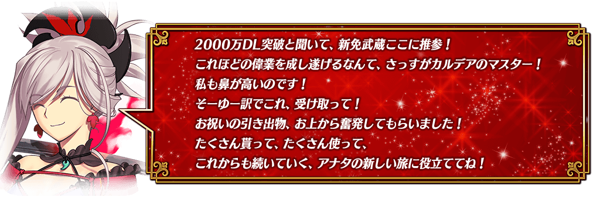
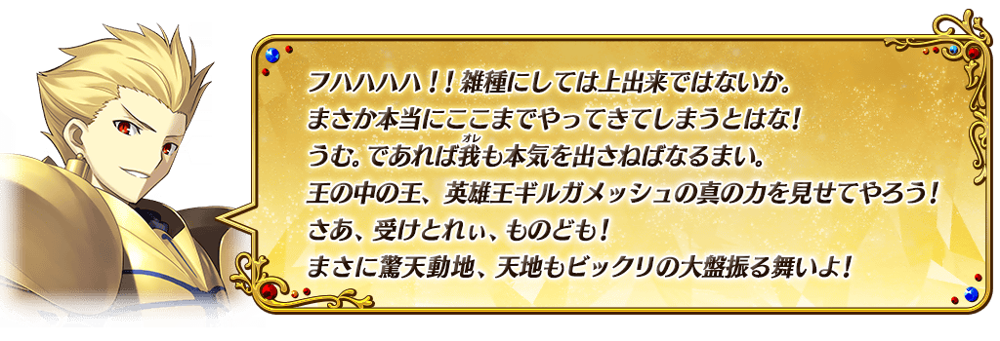
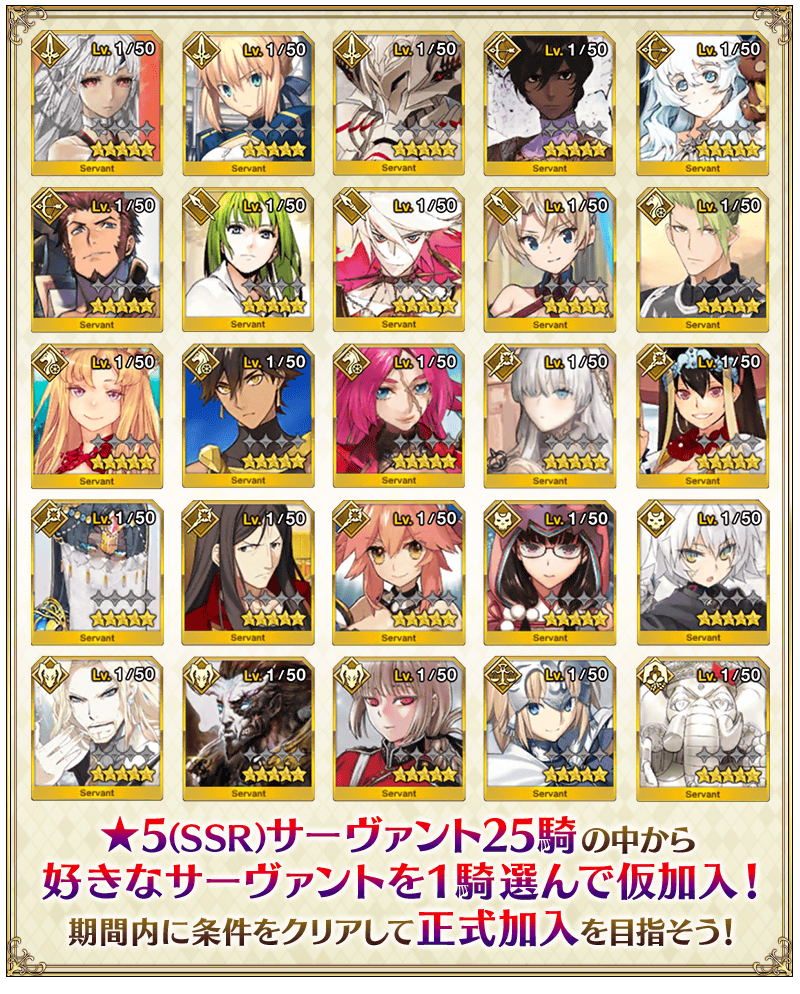
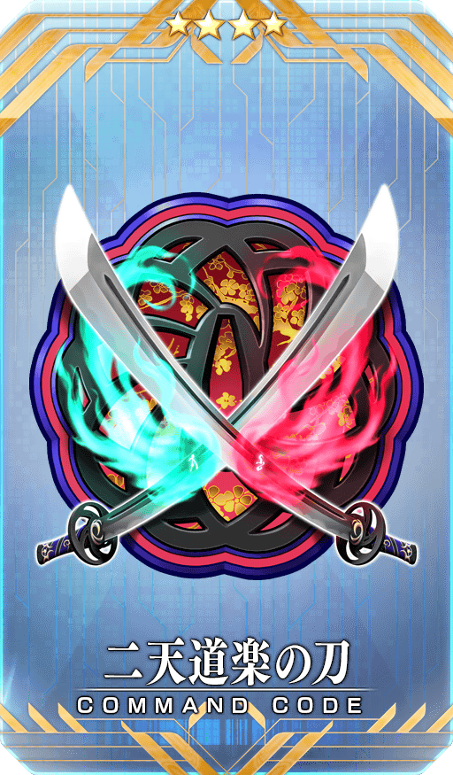
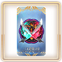
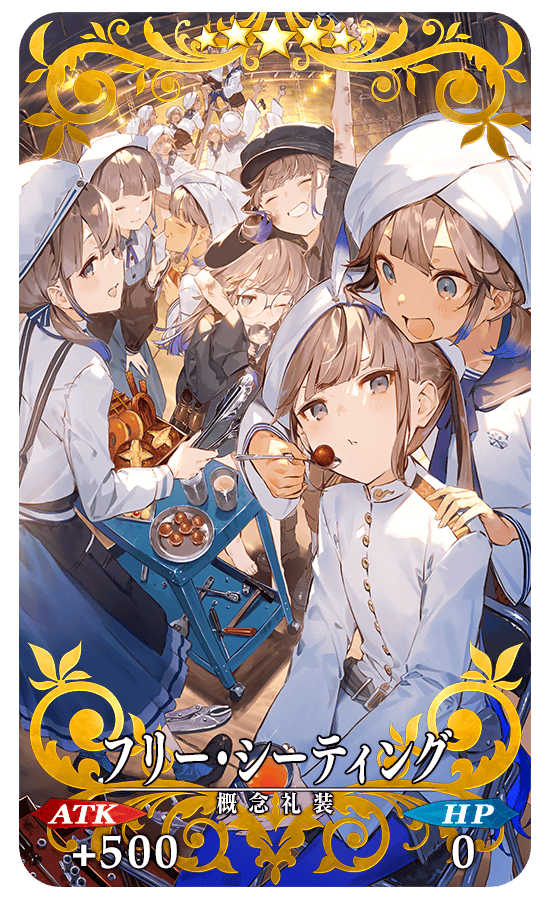

◆舉辦期間◆
2020年4月29日(三) 17:00～5月6日(三) 11:59
※本頁面皆為開發中圖片。會有與實際圖片相異的情況。
【4月29日(三) 21:00追記】
※現在強化靠「2000萬DL記念券」交換的★5(SSR)從者時，會得到強化獲得經驗值2倍的效果，但由於顯示上不會顯示2倍的獲得經驗值，即使是達到從者等級上限的情況，仍會是可放置強化用素材的狀態。因此，會發生有消耗比原本所需還多強化用素材情況的問題。
關於向遭遇到本問題各位玩家的對應，會接續進行調查，日後給予相當於原本所需消耗經驗值的經驗值卡至禮物箱。
關於對應的時間，會再另行公告。

★5(SSR)從者獲得為止的步驟
本宣傳活動中，通過特定條件的話可獲得做為對象25位★5(SSR)從者之中1位。想要獲得需要以下的『暫時加入』與『正式加入』2個步驟。
【步驟1】靠「2000萬DL記念券」讓★5(SSR)從者『暫時加入』吧！
達成在2020年4月29日(三) 17:00～5月31日(日) 22:59期間中舉辦的期間限定任務「【2000萬DL突破記念】通過『第一特異點 第1節』」後，可獲得「2000萬DL記念券」做為報酬。
在達文西工房內的「活動道具交換」，「2000萬DL記念券」可交換從對象★5(SSR)從者選擇喜愛的1位使其『暫時加入』！
◆「2000萬DL記念券」交換期間◆
2020年4月29日(三) 17:00～6月14日(日) 22:59
◆於達文西工房的交換條件◆
2020年6月14日(日) 22:59前通過「第一特異點 邪龍百年戰爭 奧爾良 第1節」的御主對象
【步驟2】通過條件讓『暫時加入』的從者『正式加入』吧！
靠「2000萬DL記念券」暫時加入的從者，在下述期間中通過條件後，就會『正式加入』。
◆正式加入條件通過期間◆
2020年4月29日(三) 17:00～6月30日(二) 22:59
◆正式加入條件◆
達成以下所有的條件
・交換★5(SSR)從者的靈基再臨進行1次以上
・交換★5(SSR)從者的絆達成Lv.5以上
※持有同一從者的情況，無論哪位進行靈基再臨1次以上，都能滿足加入條件。 ※持有同一從者的情況，在獲得時會是與已經持有從者同樣的絆Lv.。
※請注意靠「2000萬DL記念券」暫時加入的★5(SSR)從者，在6月30日(二) 22:59前未正式加入的情況，將會脫離。

◆有關券的注意◆
※交換後的★5(SSR)從者會送至禮物箱，「2000萬DL記念券」會消失。
※請注意就算未交換的情況，在交換期間結束後「2000萬DL記念券」會消失。
◆有關從者的注意◆
※對象從者不包含期間限定從者及透過章節進行所追加的從者。
※關於下述的從者為交換對象外。
・★5(SSR)狄奧斯庫洛伊
・★5(SSR)奧德修斯
※請注意無記名靈基的獲得條件(同一位★5(SSR)從者累計入手6位以上)只計算透過召喚入手的情況，本宣傳活動中入手同一位★5(SSR)從者的情況不會計算。
※靠「2000萬DL記念券」交換的暫時加入狀態★5(SSR)從者，無法被選擇成從者寶具強化素材及靈基變還(販賣)的對象。
※請注意無法對暫時加入狀態的從者進行「特別再臨」。
※讓目前為止未入手的暫時加入狀態從者正式加入以前，或入手與暫時加入狀態從者同一位的從者以前，不會開放於從者詳細畫面的一部份的語音、圖鑑(マテリアル)的靈基一覧及與從者的記錄。
※幕間物語及強化關卡，在暫時加入狀態的從者未滿足開放條件而正式加入以前不會開放。
※交換已經入手過的★5(SSR)從者情況，只要入手過的從者滿足正式加入條件，交換的★5(SSR)從者就可以正式加入狀態入手。
※關於隱藏真名尚未判明的從者，透過主線關卡的進行會讓從者及一部份寶具的名稱變化。
※本宣傳活動中，會記載隱藏真名的對象從者真名。
◆交換對象從者◆
| 職階 | 從者名 |
|---|---|
| Saber | 阿提拉 |
| 阿爾托莉亞・潘德拉剛 | |
| 莫德雷德 | |
| Archer | 阿周那 |
| 俄里翁 | |
| 拿破崙 | |
| Lancer | 恩奇杜 |
| 迦爾納 | |
| 布拉達曼特 | |
| Rider | 阿基里斯 |
| 歐羅巴 | |
| 奧茲曼迪亞斯 | |
| 弗朗西斯・德雷克 | |
| Caster | 安娜塔西亞 |
| 玄奘三藏 | |
| 雪赫拉莎德(不夜城的Caster) | |
| 諸葛孔明〔艾梅洛Ⅱ世〕 | |
| 玉藻前 | |
| Assassin | 刑部姬 |
| 開膛手傑克 | |
| Berserker | 弗拉德三世 |
| 項羽 | |
| 南丁格爾 | |
| Ruler | 貞德 |
| MoonCancer | 吉娜可＝加里吉利(偉大石像神) |
※「★5(SSR)吉娜可＝加里吉利(偉大石像神)」為「★5(SSR)偉大石像神」靈基再臨到第2階段的話名稱會變成「★5(SSR)吉娜可＝加里吉利」。


於官方推特上「通過『2000萬DL突破宣傳活動』正式加入條件來獲得1位對象★5從者吧！」推特的轉推數，於下述的期間內達成10萬轉推達成的話，想所有遊玩遊戲的的御主贈送豪華報酬！
本次為了記念2000萬DL突破贈送聖晶石30個(聖晶石召喚最大11次份)！
對象推特，請自下述URL確認。
■「Fate/Grand Order」官方推特
@fgoproject
※(聖晶石召喚最大11次份)限在同一個聖晶石召喚進行的情況。
◆舉辦期間◆
2020年4月25日(六) 於官方推特上的推特刊載後～4月29日(三) 11:59
◆配發預定日◆
2020年4月30日(四) 3:00～5月7日(四) 2:59的期間中，在初次進行登入的時間點，贈予至禮物箱。
◆贈送對象◆
所有的御主對象
※在舉辦期間內達成10萬轉推的情況，新御主玩家必須在預定配發的最終日5月7日(四) 2:59前推進至通過「特異點F 炎上汙染都市 冬木 第3節 進行度1」。
※未達到達成目標轉推數的情況及在期間內未登入的情況，無法領取達成報酬。

為了記念2000萬DL突破記念，實施特別登入獎勵。
在下述期間中7天內連續登入的話，贈送睿智的猛火ALL★4(SR)10張、白銀果實10個、黃金果實10個、1,000萬QP、英靈結晶・星之芙芙ALL★3(HP)10張、英靈結晶・太陽之芙芙ALL★3(ATK)10張、呼符10張(聖晶石召喚最大11次份)豪華報酬！

並且，在同期間中登入4次(1天算1次)的話，合送魔力稜鏡200個、英靈結晶・流星之芙芙ALL★4(HP)1張、英靈結晶・日輪之芙芙ALL★4(ATK)1張、稀有稜鏡1個！
◆舉辦期間◆
2020年4月30日(四) 3:00～5月10日(日) 2:59
◆贈送對象◆
2020年5月9日(六) 2:59前通過「特異點F 炎上汙染都市 冬木」的御主對象
※上述時間前，在管理室(ターミナル)畫面的關卡橫幅必須要有「CLEAR」的文字顯示。
【特別連續登入獎勵】
| 登入天數 | 贈送內容 | |
|---|---|---|
| 第1天 |

|
睿智的猛火ALL★4(SR) 10張 |
| 第2天 |

|
白銀果實 10個 |
| 第3天 |

|
黃金果實 10個 |
| 第4天 |

|
1,000萬QP |
| 第5天 |

|
英靈結晶・星之芙芙ALL★3(HP) 10張 |
| 第6天 |

|
英靈結晶・太陽之芙芙ALL★3(ATK) 10張 |
| 第7天 |

|
呼符 10張(聖晶石召喚最大11次份) |
※登入獎勵會在每天3:00配發。 ※連續登入天數中斷後，無法領取之後的禮物。 ※(聖晶石召喚最大11次份)限在同一個聖晶石召喚進行的情況。 ※最多能領取7次，但根據成為贈送對象的時間點，可能無法到此上限。
【特別次數登入獎勵】
| 登入天數 | 贈送內容 | |
|---|---|---|
| 第1次 |

|
魔力稜鏡 200個 |
| 第2次 |

|
英靈結晶・流星之芙芙ALL★4(HP) 1張 |
| 第3次 |

|
英靈結晶・日輪之芙芙ALL★4(ATK) 1張 |
| 第4次 |

|
稀有稜鏡 1個 |
※登入獎勵會在每天3:00配發。 ※合計4天內能領取，但根據成為贈送對象的時間點，可能無法到此上限。
下述的期間中，強化靠「2000萬DL記念券」交換的★5(SSR)從者時的獲得經驗值變成2倍。
※請注意交換的★5(SSR)從者，在正式加入後進行下述的對應的話「強化時的獲得經驗值2倍效果」會消失。 ・正式加入後的★5(SSR)從者做為強化素材使用的情況。 ・正式加入後的★5(SSR)從者做為寶具強化素材使用的情況。 ・正式加入後的★5(SSR)從者販賣的情況。
◆舉辦期間◆
2020年4月29日(三) 17:00～6月30日(二) 22:59
【4月29日(三) 21:00追記】
※現在強化靠「2000萬DL記念券」交換的★5(SSR)從者時，會得到強化獲得經驗值2倍的效果，但由於顯示上不會顯示2倍的獲得經驗值，即使是達到從者等級上限的情況，仍會是可放置強化用素材的狀態。因此，會發生有消耗比原本所需還多強化用素材情況的問題。
關於向遭遇到本問題各位玩家的對應，會接續進行調查，日後給予相當於原本所需消耗經驗值的經驗值卡至禮物箱。
關於對應的時間，會再另行公告。

下述的期間中，在「御主任務」的「限定」標籤內以期間限定追加「【2000萬DL突破記念】任務」。
通過所有任務的話、可得到包含指令紋章「★4(SR)二天道楽の刀」1張和2000萬DL記念券、聖晶石20個等的豪華報酬！
◆舉辦期間◆
2020年4月29日(三) 17:00～5月31日(日) 22:59
◆領取期間◆
2020年4月29日(三) 17:00～6月7日(日) 22:59
◆2000萬DL突破宣傳活動指令紋章◆
|  |
★★★★SR |
◆追加任務◆
| 任務名稱 | 任務達成報酬 | |
|---|---|---|
|
【2000萬DL突破記念】 通過所有限定任務 |

|
聖晶石 10個 |
|
【2000萬DL突破記念】 通過任意8個限定任務 |
 | ★4(SR)二天道楽の刀 1張 |
|
【2000萬DL突破記念】 通過『第一特異點 第1節』 |
2000萬DL記念券 1張 | |
|
【2000萬DL突破記念】 通過『第三特異點 第1節』 |
|
聖晶石 1個 |
|
【2000萬DL突破記念】 通過『第六特異點 第1節』 |
|
聖晶石 3個 |
|
【2000萬DL突破記念】 通過『Lostbelt No.1 第1節』 |
|
聖晶石 3個 |
|
【2000萬DL突破記念】 通過『Lostbelt No.5 奧林帕斯 第1節』 |
|
聖晶石 3個 |
|
【2000萬DL突破記念】 通過1次『任意的每日關卡「蒐集種火」』 |
|
睿智的猛火ALL★4(SR) 10張 |
|
【2000萬DL突破記念】 通過1次『任意的每日關卡「修練場」』 |
|
睿智的猛火ALL★4(SR) 10張 |
|
【2000萬DL突破記念】 通過1次『任意的每日關卡「打開寶物庫之門」』 |
|
睿智的猛火ALL★4(SR) 10張 |
|
【2000萬DL突破記念】 通過1次任意的自由關卡 |
|
睿智的猛火ALL★4(SR) 10張 |
|
【2000萬DL突破記念】 實行30次友情點數召喚 |
|
睿智的猛火ALL★4(SR) 10張 |
※請注意舉辦期間與領取期間有所差異。 ※請注意與每週日23:00更新的普通任務(Weekly)不同欄位，超過領取期間的話無法入手報酬。 ※就算達成「【2000萬DL突破記念】任務」，也不會計算在普通任務(Weekly)的任務進行度。 ※根據主線關卡的進行度會有無法達成「【2000萬DL突破記念】任務」的情況。

以期間限定在迦勒底之門內開放全種類每日出現的關卡「蒐集種火」與「修練場」。
◆舉辦期間◆
2020年4月29日(三) 17:00～5月6日(三) 11:59
※關卡通過報酬的魔力稜鏡只限初次通過時才可獲得。 ※請注意由於以期間限定出現的「蒐集種火」及「修練場」與平常每日出現的「蒐集種火」及「修練場」的關卡不同，不會繼承「關卡情報」。 ※舉辦期間中，不會重置關卡通過報酬。
【全天開放的蒐集種火一覧】
| 關卡名 | 可做為戰利品獲得 的主要道具 |
攻略推薦 職階 |
|---|---|---|
| 【2000萬DL突破記念】 週一 蒐集種火<槍・殺篇> 初級、中級、上級、超級 |
Lancer、Assassin、Berserker的經驗值卡 |   |
| 【2000萬DL突破記念】 週二 蒐集種火<剣・騎篇> 初級、中級、上級、超級 |
Saber、Rider、Berserker的經驗值卡 |   |
| 【2000萬DL突破記念】 週三 蒐集種火<弓・術篇> 初級、中級、上級、超級 |
Archer、Caster、Berserker的經驗值卡 |   |
| 【2000萬DL突破記念】 週四 蒐集種火<槍・殺篇> 初級、中級、上級、超級 |
Lancer、Assassin、Berserker的經驗值卡 | |
| 【2000萬DL突破記念】 週五 蒐集種火<剣・騎篇> 初級、中級、上級、超級 |
Saber、Rider、Berserker的經驗值卡 | |
| 【2000萬DL突破記念】 週六 蒐集種火<弓・術篇> 初級、中級、上級、超級 |
Archer、Caster、Berserker的經驗值卡 | |
| 【2000萬DL突破記念】 週日 蒐集種火<隨機篇> 初級、中級、上級、超級 |
Saber、Archer、Lancer、Rider、Caster、Assassin、Berserker的經驗值卡(隨機) | - |
※Berserker在所有每日關卡皆為有效職階。
【全天開放的修練場一覧】
| 關卡名 | 可做為戰利品獲得 的主要道具 |
攻略推薦 職階 |
|---|---|---|
| 【2000萬DL突破記念】 週一 弓之修練場 初級、中級、上級、超級 |
Archer的靈基再臨用道具、Archer的技能強化素材道具 | |
| 【2000萬DL突破記念】 週二 槍之修練場 初級、中級、上級、超級 |
Lancer的靈基再臨用道具、Lancer的技能強化素材道具 | |
| 【2000萬DL突破記念】 週三 狂之修練場 初級、中級、上級、超級 |
Berserker的靈基再臨用道具、Berserker的技能強化素材道具 | ALL |
| 【2000萬DL突破記念】 週四 騎之修練場 初級、中級、上級、超級 |
Rider的靈基再臨用道具、Rider的技能強化素材道具 |  |
| 【2000萬DL突破記念】 週五 術之修練場 初級、中級、上級、超級 |
Caster的靈基再臨用道具、Caster的技能強化素材道具 | |
| 【2000萬DL突破記念】 週六 殺之修練場 初級、中級、上級、超級 |
Assassin的靈基再臨用道具、Assassin的技能強化素材道具 | |
| 【2000萬DL突破記念】 週日 劍之修練場 初級、中級、上級、超級 |
Saber的靈基再臨用道具、Saber的技能強化素材道具 | |
※Berserker在所有每日關卡皆為有效職階。

下述的期間中，主線關卡第2部 第5章(奧林帕斯)為止的AP消耗量變成0！
尚未通過主線關卡的御主，請務必活用此機會！
◆舉辦期間◆
2020年4月29日(三) 17:00～5月6日(三) 11:59
◆對象關卡◆
主線關卡第1部(從特異點F到終局特異點)
主線關卡第2部(從第1章到第5章(奧林帕斯))
※請注意亞種特異點(從Ⅰ到Ⅳ)、自由關卡為對象外。
下述的期間中，通過主線關卡第2部 第5章「Lostbelt No.5 星間都市山脈 奧林帕斯 擊落神之日」的話，第1部與第2部 第5章(奧林帕斯)為止的自由關卡初次通過前的AP消耗量變成1/2！(就算在戰鬥中撤退的情況，於關卡初次通過前也會是同様的消耗量)
還留有尚未通過自由關卡的御主，請務必藉此機會通過！
◆舉辦期間◆
2020年4月29日(三) 17:00～5月6日(三) 11:59
◆宣傳活動對象◆
通過主線關卡第2部 第5章「Lostbelt No.5 星間都市山脈 奧林帕斯 擊落神之日」的御主對象
※不需要通過亞種特異點(從Ⅰ到Ⅳ)。
◆對象關卡◆
第1部(從特異點F到終局特異點)的自由關卡
第2部(從第1章到第5章(奧林帕斯))的自由關卡
※初次通過是指入手初次通過報酬的時間點。 ※請注意亞種特異點(從Ⅰ到Ⅳ)的自由關卡為對象外。
向所有的御主對象，「指令紋章的持有欄位」以追加擴張50欄位
目前為止的200欄位擴張至持有欄位250欄位。
◆舉辦期間◆
2020年4月29日(三) 17:00～
【持有欄位的擴張數】
| 對象持有欄位 | 擴張數 |
|---|---|
| 指令紋章持有欄位 | 200→250(追加50欄位) |
為了記念2000萬DL突破，以期間限定在達文西工房的「魔力稜鏡交換」追加下述的概念禮裝。
◆概念禮裝交換期間◆
2020年4月30日(四) 23:00～7月31日(五) 22:59
|  |
★★★★★SSR |
◆追加道具(永久)◆
| 追加道具 | 能交換次數 | 1次交換所需的 魔力稜鏡數 |
|---|---|---|
|
【期間限定】 フリー・シーティング |
5次 | 1000個 |
為了記念2000萬DL突破，在達文西工房的「稀有稜鏡交換」永久追加『魔力稜鏡交換「ベラ・リザ」』。
由於『魔力稜鏡交換「ベラ・リザ」』是在「魔力稜鏡交換」開放「★5(SSR)ベラ・リザ」的權利，關於實際交換1次需要魔力稜鏡1000個。
◆追加時間◆
2020年4月29日(三) 17:00～
|
★★★★★SSR |
◆追加道具(永久)◆
| 追加道具 | 能交換次數 | 1次交換所需的 稀有稜鏡數 |
|---|---|---|
| 魔力稜鏡交換「ベラ・リザ」 | 1次 | 1個 |
※追加到「稀有稜鏡交換」的『魔力稜鏡交換「ベラ・リザ」』為永久，沒有交換期限。 ※已經交換5張「★5(SSR)ベラ・リザ」的玩家，無法交換『魔力稜鏡交換「ベラ・リザ」』は交換。 ※關於已經交換1～4張「★5(SSR)ベラ・リザ」的玩家，只會開放未交換份。無論能交換張數不會改變必須的稀有稜鏡交換數(已經交換4張的情況只開放1張份)。

自2020年4月25日(六) 18:00，在起跑衝刺宣傳活動的登入獎勵，以期間限定追加特別獎勵！
下述期間中，第7天的獎勵變成2倍，以期間限定追加聖晶石召喚最多22次份的聖晶石30個與呼符10張等。
※(聖晶石召喚最大22次份)限在同一個聖晶石召喚進行的情況。
◆舉辦期間◆
2020年4月25日(六) 19:00～5月9日(六) 2:59
◆起跑衝刺登入獎勵的內容◆
| 總登入天數 | 入手登入獎勵 |
|---|---|
| 第1天 |
聖晶石 2個 呼符 5張 友情點數 2,000pt 10萬QP 睿智的猛火ALL★4(SR) 20張 黃金果實 1個 |
| 第2天 |
聖晶石 3個 呼符 5張 友情點數 2,000pt 10萬QP 睿智的猛火ALL★4(SR) 20張 黃金果實 1個 |
| 第3天 |
聖晶石 5個 呼符 5張 友情點數 2,000pt 10萬QP 睿智的猛火ALL★4(SR) 20張 黃金果實 1個 |
| 第4天 |
聖晶石 7個 友情點數 2,000pt 10萬QP 睿智的猛火ALL★4(SR) 20張 黃金果實 1個 |
| 第5天 |
聖晶石 10個 友情點數 2,000pt 10萬QP 睿智的猛火ALL★4(SR) 20張 黃金果實 1個 |
| 第6天 |
聖晶石 15個 友情點數 2,000pt 10萬QP 睿智的猛火ALL★4(SR) 20張 黃金果實 1個 |
| 第7天 |
【期間限定増量】 聖晶石 60個 呼符 20張 友情點數 4,000pt 200萬QP 睿智的猛火ALL★4(SR) 40張 黃金果實 20個 |
| 第8天 |
聖晶石 5個 友情點數 2,000pt 10萬QP 睿智的猛火ALL★4(SR) 20張 黃金果實 1個 |
| 第9天 |
聖晶石 7個 友情點數 2,000pt 10萬QP 睿智的猛火ALL★4(SR) 20張 黃金果實 1個 |
| 第10天 |
聖晶石 9個 友情點數 2,000pt 10萬QP 睿智的猛火ALL★4(SR) 20張 黃金果實 1個 |
| 第11天 |
聖晶石 12個 友情點數 2,000pt 10萬QP 睿智的猛火ALL★4(SR) 20張 黃金果實 1個 |
| 第12天 |
聖晶石 15個 友情點數 2,000pt 10萬QP 睿智的猛火ALL★4(SR) 20張 黃金果實 1個 |
| 第13天 |
聖晶石 25個 友情點數 2,000pt 10萬QP 睿智的猛火ALL★4(SR) 20張 黃金果實 1個 |
| 第14天 |
聖晶石 50個 呼符 10張 友情點數 2,000pt 100萬QP 睿智的猛火ALL★4(SR) 20張 黃金果實 10個 |
※登入獎勵會在每天3:00配發。 ※表格中的紅字為期間限定的特別獎勵。 ※在舉辦期間內未進行第7天登入的情況，無法領取2倍的獎勵。
對一定期間未登入的御主對象，以期間限定舉辦「回歸連續登入獎勵」。
在下述期間中，7天內連續登入的話，贈送聖晶石30個(聖晶石召喚最大11次份)的聖晶石與對從者的養成有用的各種道具！！
※(聖晶石召喚最大11次份)限在同一個聖晶石召喚進行的情況。
◆舉辦期間◆
2020年4月25日(六) 19:00～5月9日(六) 2:59
※期間內未登入的話無法領取。
◆贈送對象◆
滿足以下所有條件的御主對象
・2020年2月1日(六) 23:00～4月25日(六) 18:59的期間未進行登入
・2020年5月8日(五) 2:59前通過「特異點F 炎上汙染都市 冬木」
※上述時間前，在管理室(ターミナル)畫面的關卡橫幅必須要有「CLEAR」的文字顯示。
【回歸連續登入獎勵合計】 ・聖晶石 30個(聖晶石召喚最大11次份) ・友情點數 14,000pt(友情點數召喚70次份) ・睿智的猛火 ALL★4(SR) 16張 ・黃金果實 16個
◆回歸登入獎勵的內容◆
| 連續登入天數 | 贈送內容 |
|---|---|
| 第1次 |
聖晶石 1個 友情點數 2,000pt 睿智的猛火ALL★4(SR) 1張 黃金果實 1個 |
| 第2次 |
聖晶石 1個 友情點數 2,000pt 睿智的猛火ALL★4(SR) 1張 黃金果實 1個 |
| 第3次 |
聖晶石 2個 友情點數 2,000pt 睿智的猛火ALL★4(SR) 1張 黃金果實 1個 |
| 第4次 |
聖晶石 3個 友情點數 2,000pt 睿智的猛火ALL★4(SR) 1張 黃金果實 1個 |
| 第5次 |
聖晶石 5個 友情點數 2,000pt 睿智的猛火ALL★4(SR) 1張 黃金果實 1個 |
| 第6次 |
聖晶石 8個 友情點數 2,000pt 睿智的猛火ALL★4(SR) 1張 黃金果實 1個 |
| 第7次 |
聖晶石 10個 友情點數 2,000pt 睿智的猛火ALL★4(SR) 10張 黃金果實 10個 |
※第1天的回歸登入獎勵會自4月25日(六) 19:00以後配發。 ※之後的的回歸登入獎勵會在每天3:00配發。 ※連續登入天數中斷的話，無法領取之後的禮物。 ※最多能領取7次，但根據開始遊戲的時間點，可能無法到此上限。
其他還有，期間限定「2000萬DL記念Pick Up召喚(每日交替)」舉辦中！
關於詳情，請自下述橫幅確認。
■「2000萬DL記念Pick Up召喚(每日交替)」詳細情報